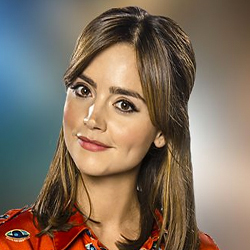

| Home | The Doctors | The Companions | The Villains |
|
|||
| cf
Clara Oswald's HomepageOswin Oswald is introduced in the series 7 premiere, "Asylum of the Daleks". She is the sole survivor of the starship Alaska, which crashed on the Asylum, a prison planet for insane Daleks. Oswin then learns from the Eleventh Doctor (Matt Smith) that she has been converted from human into a Dalek and has coped by retreating into a fantasy of her own survival. She assists the Doctor and his travelling companions to escape the planet unharmed, but at the cost of her own life.Later, in the 2012 Christmas special "The Snowmen", the Doctor meets a woman named Clara Oswin Oswald. She is a Victorian barmaid andgoverness whom the Doctor invites to be his newest companion, but who dies from an attack by a minion of the Great Intelligence. Seeing her full name on her tombstone, the Doctor realises she is the same woman as Oswin from the Dalek Asylum. Intrigued by the mystery of the woman who has lived and died twice in different eras, he begins searching across time for another Clara.
|